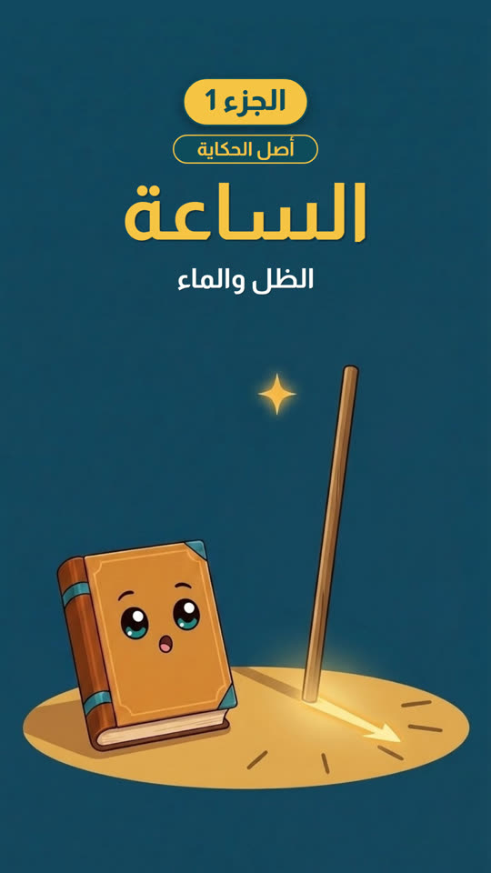

الأحدث
الساعة · الجزء 1: الظل والماء
كل شيء له بداية. نعود إلى اللحظة الأولى وراء الأشياء التي نستخدمها كل يوم، ونرويها حكايةً قصيرة لا تُنسى.

سلسلة الساعة
الجزء 1الأجزاء الجاية قريبًا
كل الحكايات
عن أصل الحكاية
فيديوهات قصيرة بالعربية الفصحى عن أصل الاختراعات والاكتشافات. كل معلومة نذكرها لها مصدران موثوقان على الأقل، والرسوم مولّدة بالذكاء الاصطناعي لتصوير الأجواء، وهي ليست صورًا تاريخية.